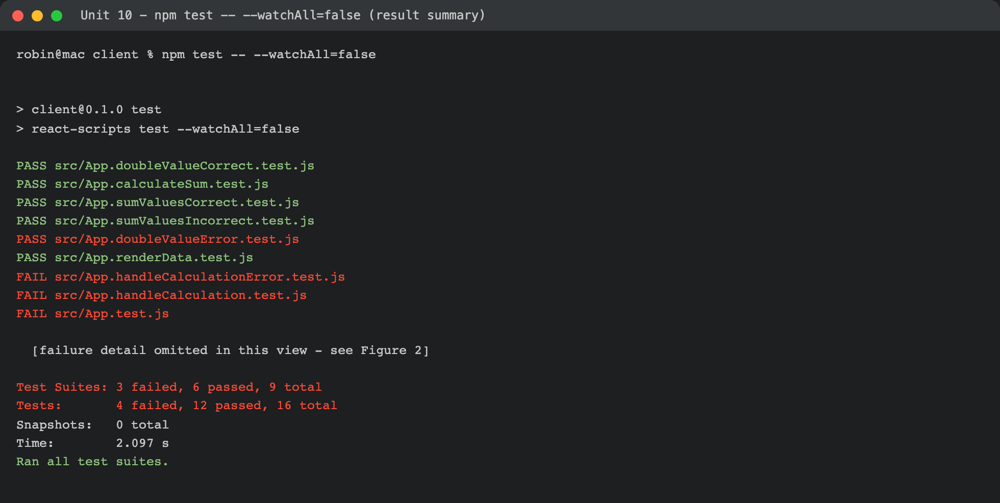
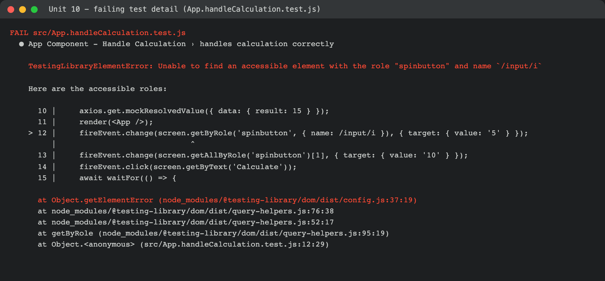

| Student | Yuandong Yang | Student ID | 000949205 |
|---|---|---|---|
| Yuandong.Yang@edu.sait.ca | Course | CPRG-305-B, Unit 10 Activity | |
| Date | November 16, 2026 | Project | SimpleApplication (provided) |
Node.js v24.16.0 and npm 11.13.0 were already installed. The supplied SimpleApplication.zip contains the server, and a client/src folder with App.js and nine test files, but no package.json and no public/ folder — the project README expects the student to generate those with create-react-app. The client was therefore completed exactly as the README instructs before the tests could run:
$ cd SimpleApplication $ npx create-react-app client # generates package.json, public/, index.js $ cd client $ npm install axios # App.js imports axios; RTL ships with the template # the nine provided src files were copied over the generated src/
The server dependencies were restored with npm install in server/ as well. The server is not required for this activity: every test mocks axios with jest.mock('axios'), so no HTTP request leaves the test process. (Worth noting for the manual run: on macOS, port 5000 is held by Control Center / AirPlay Receiver, so node server.js fails with EADDRINUSE until AirPlay Receiver is turned off in System Settings.)
$ cd SimpleApplication/client
Jest finds every file matching *.test.js under src/ and runs them. The run below uses --watchAll=false so the runner produces one complete report and exits instead of staying in watch mode, which makes the output easier to capture as evidence.
$ npm test # interactive watch mode $ npm test -- --watchAll=false # single run, used for the evidence below

Jest prints one PASS/FAIL line per suite, then the individual test descriptions, then the detail for every failure, and finally the totals. Mapping that output back to the files gives the following picture.
| Test suite | Test description | Result |
|---|---|---|
App.renderData.test.js | renders data from API | Pass |
App.calculateSum.test.js | calculates the sum correctly | Pass |
App.sumValuesCorrect.test.js | sumValues returns correct value | Pass |
App.sumValuesIncorrect.test.js | sumValues returns incorrect value (negative assertion) | Pass |
App.doubleValueCorrect.test.js | doubleValue returns correct value | Pass |
App.doubleValueError.test.js | doubleValue returns error for non-number input | Pass |
App.handleCalculation.test.js | handles calculation correctly | Fail |
App.handleCalculationError.test.js | handles calculation error | Fail |
App.test.js (8 tests) | handles calculation correctly | Fail |
| handles calculation error | Fail | |
| the other six tests (render, sum, double) | Pass |
The provided README states that the suite is deliberately written so that some tests pass and some fail, and the result confirms it: all four failures are the same defect reported in three different suites, because App.test.js repeats the two calculation tests that also exist as standalone files.

The error message names the cause precisely:
TestingLibraryElementError: Unable to find an accessible element with the role
"spinbutton" and name `/input/i`
> 12 | fireEvent.change(screen.getByRole('spinbutton', { name: /input/i }), ...)
The query asks for an element with the ARIA role spinbutton and an accessible name matching /input/i. In App.js the two number fields are written as bare inputs:
<input type="number" value={num1} onChange={...} />
A <input type="number"> does have the role spinbutton, but with no <label>, aria-label or placeholder it has no accessible name at all, so the name filter excludes it and the query finds nothing. Jest helpfully prints the list of roles that are available plus the rendered DOM, which is how the diagnosis is confirmed: the spinbutton elements are present, only nameless. The remaining lines of the same test use getAllByRole('spinbutton')[1] without a name filter, and that form would have worked.
Two ways to make the test pass, in order of preference:
aria-label="Input 1" / "Input 2"). This removes a genuine accessibility defect in the application and makes the existing query valid, so the test was arguably right and the code wrong.screen.getAllByRole('spinbutton')[0], matching what the next line already does.The run also prints console.error warnings about state updates that are not wrapped in act(...). Those are warnings, not failures: they come from fetchData() resolving after the test body has finished. They do not change the verdict, but they indicate the tests should await the data load before asserting.
Run without the flag, npm test stays resident in watch mode: it re-runs the affected suites every time a source or test file is saved, which gives immediate feedback while fixing the four failures above. The runner is stopped with Ctrl + C. Watch mode is the right choice while developing; the single-shot form (--watchAll=false, or CI=true) is the right choice for evidence capture and for a CI or container run, because it exits with a status code instead of waiting for input.
create-react-app and npm install axios had been run, npm test could not even start, and the error at that point says nothing about the real problem. A test suite is only as reproducible as the project skeleton it ships with — which is exactly the gap the Unit 9 Docker image closes.TestingLibraryElementError. The message, the code frame and the printed DOM together identified the cause in one pass; guessing from the test name alone would have suggested a problem with the calculation logic, which is working correctly.App.js. In the other direction, App.sumValuesIncorrect.test.js passes only because it asserts that "Sum of values: 35" is absent — it would also pass if the component rendered nothing at all. Negative assertions of that shape are weak and should be paired with a positive assertion.App.test.js duplicates the standalone files. In a real project the defect count read off the console would be inflated; one defect report, not four, is what belongs in the tracker.| File | Contents |
|---|---|
evidence/01-npm-test-summary.png | Suite list and Jest totals for the full run. |
evidence/02-npm-test-failure-detail.png | Failure detail for App.handleCalculation.test.js, including the code frame. |